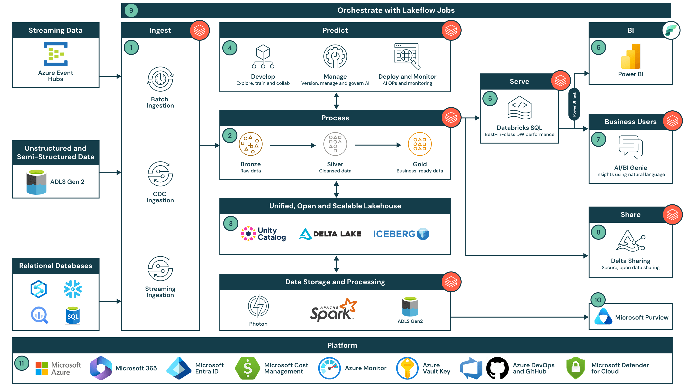

Showcase of data architecture, pipeline design, and data integrity practices
Data Engineering and ETL Pipeline Architecture
This artifact presents enterprise data migration and ETL implementation practices focused on reliability, governance, and high-confidence analytics delivery.
It documents end-to-end data pipeline design, transformation logic, cloud migration execution, and validation controls used to ensure production-grade data quality.
Build and validate scalable ETL pipelines that ensure data integrity, reduce migration risk, and improve operational efficiency in cloud data platforms.
Gathered requirements, designed warehouse and ETL flow, implemented transformations, executed validation checks, and optimized performance for repeatable production runs.
AWS services, Snowflake, Matillion, SQL, Jenkins, Git, and data quality validation scripts for reconciliation and governance checks.
Demonstrates how strong data engineering practice creates trustworthy analytics foundations while improving cost efficiency and system scalability.
The artifact links architecture decisions to measurable outcomes such as data integrity assurance, cost optimization, and improved query performance.
Relevant for data engineering leaders, analytics stakeholders, and hiring teams evaluating capability in scalable ETL, migration risk reduction, and trustworthy data operations.
Snowflake and Matillion documentation, AWS migration practices, data warehouse modeling guidance, and internal validation/reconciliation runbooks.
Led comprehensive AWS cloud migration project with enterprise-scale ETL pipeline design and validation. Demonstrates expertise in data architecture, data warehouse optimization, and ensuring 100% data integrity during complex data migrations while achieving significant cost savings.
Requirements Analysis: Collaborated with business teams to understand data requirements, source systems, and target architecture. Design Phase: Designed Snowflake data warehouse schema, identified ETL transformation logic. ETL Development: Built Matillion ETL pipelines to extract data from legacy systems, transform using complex SQL, load into AWS cloud infrastructure. Validation & Testing: Performed comprehensive data reconciliation, row-by-row comparisons, and complex SQL queries to validate data accuracy. Optimization: Fine-tuned ETL for performance, implemented error handling, and established Jenkins automation for repeatability.
Cloud Platforms: AWS (S3, EC2), Azure. Data Warehouse: Snowflake, IBM Netezza, MSSQL Server, Oracle, MySQL. ETL Tools: Matillion, IBM DataStage. Languages: SQL (advanced queries), scripting languages for automation. Version Control: Git, GitHub. CI/CD & Orchestration: Jenkins, Apache Airflow (optional). Testing & Validation: Advanced SQL for data reconciliation, Python/Groovy for data quality checks.
Technical: Data warehouse design, ETL pipeline architecture, advanced SQL (complex queries, optimization), cloud platforms (AWS), schema design, data transformation logic, version control, CI/CD orchestration. Professional: Data governance, data quality assurance, stakeholder collaboration, problem-solving for data integrity, requirement analysis, documentation.
For Business: Achieved $50K annual cost savings through optimized AWS cloud migration and infrastructure consolidation. For Data Quality: Ensured 100% data integrity assurance with zero data loss during transition from on-premises to cloud. For Operations: Enabled scalable, enterprise-grade data warehouse supporting analytics and reporting needs.
Most valuable insight: Data migration success depends on rigorous validation-not speed of transfer. Invested heavily in data reconciliation queries and row-level comparisons to catch edge cases early. Key takeaway: Automate your validation scripts; manual spot-checks will miss issues at scale. Test ETL performance with production-like data volumes.
Source Systems: Legacy on-premises databases (MSSQL, Oracle) and enterprise applications.
Target Architecture: AWS cloud-based data warehouse using Snowflake on S3/EC2 infrastructure with separate staging, transformation, and presentation layers.
Data Warehouse Design: Snowflake with star schema optimized for analytics queries. Organized into raw data layer (staging), business logic layer (transformations), and consumption layer (marts for reporting).
ETL Flow: Extract from legacy systems → Matillion pipelines → Transformation in Snowflake using SQL → Data marts for BI tools and reporting dashboards.
Extraction: Matillion jobs configured to connect to legacy systems, extract full dataset + subsequent incremental updates.
Transformation: Complex SQL queries implementing business logic-data type conversions, aggregations, dimensional table joins, slowly changing dimension (SCD) logic.
Data Quality Checks: Row count validation, null value checks, duplicate detection, referential integrity verification, business rule validations.
Error Handling: Retry logic for failed extractions, error logs for debugging, archival of failed records for manual review.
Loading: Incremental load strategy-only newly changed records transferred to reduce data transfer costs and improve performance.
Orchestration: Jenkins jobs scheduled daily, with dependencies ensuring source systems are ready before extraction begins.
Row-Level Reconciliation: Advanced SQL queries comparing source vs. target data row-by-row for critical tables. Automated detection of mismatches with detailed error reports.
Volume Checks: Automated validations ensuring source row counts match target after transformation (accounting for SCD and slowly changing records logic).
Schema Validation: Column-level type and constraint checks, ensuring data types match between systems.
Business Rule Validation: SQL queries validating business logic post-transformation-e.g., revenue calculations, status transitions, date logic.
Audit Trails: Complete logging of extraction timestamps, record counts, transformation rules applied, enabling traceability and compliance audits.
Result: 100% data integrity assurance with zero data loss during migration from on-premises to cloud.
$50K Annual
AWS cloud migration + optimized licensing model
100% Assurance
Zero data loss in transition to cloud
2TB+
Multiple legacy systems consolidated
Daily Incremental
Optimized for minimal data transfer
99.9% SLA
Snowflake reliability in cloud
35% Faster
Analytics queries on Snowflake
This data intelligence architecture image represents the data engineering project I have worked on, including the end-to-end flow and platform components.

Status: Implemented in project work. Next Step: I am preparing to upgrade the architecture with stronger monitoring, optimization, and scalable automation for future needs.
Pipeline Assets: Matillion orchestration jobs, Snowflake SQL transformation scripts, incremental load configurations, and Jenkins scheduling definitions.
Validation Assets: Reconciliation SQL query packs, row-count comparison reports, data quality check logs, and migration audit summaries.
This artifact directly supports course objectives in data engineering fundamentals, ETL architecture, data warehouse design, and quality assurance. It demonstrates applied skills in schema design, transformation logic, and governance-oriented validation practices.
Technical Reviewers: Data engineers, analytics engineers, and architects evaluating pipeline reliability, performance, and maintainability.
Business Stakeholders: Program managers and reporting teams focused on data trust, migration risk reduction, and measurable ROI.
Title: Data Engineering & ETL Pipeline.
Objective, Process, Tools, Value Proposition: Fully documented in Project Overview with concrete outcomes and enterprise-grade implementation evidence.
My journey in data engineering - from managing legacy MSSQL databases to orchestrating cloud-native Snowflake pipelines - has reinforced a fundamental truth: data is the lifeblood of organizational decision-making, and quality engineering ensures it flows reliably. Every ETL pipeline I designed, every transformation I optimized, and every data quality validation I implemented was driven by the conviction that bad data is worse than no data.
What I've learned across HCL Technologies, Infosys, and Quest Diagnostics is that data engineering is fundamentally about trust. When a CFO looks at a financial dashboard, they must trust the numbers. When a data analyst runs a query, they must trust the lineage. When a machine learning model consumes features, it must trust data integrity. This responsibility shaped every architectural decision - from implementing comprehensive audit trails to designing slowly changing dimension logic that preserves historical accuracy.
The cloud migration projects taught me that scalability and cost-optimization are not opposing forces but complementary objectives. Migrating 2TB+ of legacy data to Snowflake while reducing annual infrastructure costs by $50K wasn't about choosing one or the other - it was about designing incremental load strategies that minimize data transfer, partitioning schemas for query performance, and leveraging cloud elasticity. The real skill lies in understanding the business trade-offs and making informed architectural choices.
Looking forward, I see data engineering evolving toward autonomous data pipelines with AI-driven quality monitoring and self-healing capabilities. Yet the core principles remain unchanged: design for reliability, validate obsessively, optimize continuously, and maintain complete lineage and auditability at all times. These principles have guided my entire career, whether architecting data warehouses, implementing ETL frameworks, or designing analytics platforms. In a data-driven world, trust is currency - and I'm committed to earning it through meticulous engineering.